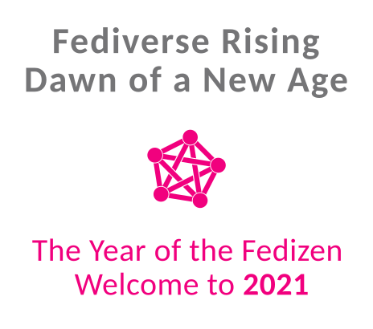

Introduction
When typing the title for this topic, Discourse suggested this topic with similar title:
AFAIK the Fediverse Futures group has not been followed-up on. But I want to discuss a different twist to it.
Everything and everyone involved in evolving the Fediverse is doing so from a highly technical perspective and mindset. This is logical as we are organically discovering the technical foundations for a new social web, based on a technology standard. But I notice this narrow focus is also leading to a general lack of imagination, especially where we advocate Fediverse to people that hadn’t heard of it before. Much of our blogs and articles about this ‘better web’ is about “What currently is” and less so about “What could be”.
I recently wrote about broadening the way we advocate ActivityPub in “Positioning ActivityPub: De-Emphasize “Being Part of the Fediverse” as primary USP”. But there’s more to it. We should avoid the technical focus early on, and inspire visions and dreams, to think out-of-the-box and about real innovation and the opportunities that flow from that.
Here’s how generally speaking a Fedi advocate promotes ActivityPub support to a FOSS project/product maintainer:
Advocate: You should implement ActivityPub in your project.
Maintainer: Why would I do that? What’s in it for me?
Advocate: Can’t you see it? There’s [microblogging & social use case outside your core business domain / technobabble].
Maintainer: Hmm, maybe. I will [close the issue for now / put on the backlog] but thanks for your idea.
Other advocates: Yeah, AP support is very cool… [upvote / technobabble]. This other project also has [technobabble].
Okay, I am painting this a bit black & white, and have been guilty myself in promoting this way.
I was triggered to write this topic, because of how - despite lotsa effort of advocates - the Discourse team and community does not have much enthusiasm in embracing ActivityPub support. Our case does not manage to make business sense to them. There were plans to implement it and even funding, but - I think due to the type of advocacy described above - they stepped away from it. In ActivityPub Support: Phase 1 RFC the MVP is for a FB-like personal feed facility that has very little to do with forum software.
Fediverse Futures visionaries group
We’ve talked about this more often. We need a more holistic approach to fedi development / evolution. We need product designers, graphics artists, UX/UI/Interaction designers, futurists and visionaries to join the dev folks.
I propose to extend the #meeting:socialcg group idea outlined by @cwebber to go this holistic route.
Proposal: Erect a Fediverse Futures initiative for elaborating high-level, non-technical perspectives, visions and dreams.
Everyone can join this initiative from whatever background they have. We’ll actively encourage and invite people with diverse and different viewpoints, and stimulate brainstorming, creativity, thinking out-of-the-box and crazy, wild ideas. Current AP devs SHOULD be actively involved, and spin-offs plus follow-ups, technical elaborations will follow afterwards and independent of the initiative.
The initiative will need a couple of people to be its drivers, but other than that needs no real ‘group’ / membership concept. It can be very loose. I volunteer to be in this driving seat, provided that at least 4 to 5 others join as well. As part of our tasks we can take the whole onboarding and community organization + processes thing within our scope.
Would love your feedback on this proposal.
Depicting domain-specific visions & dreams
Lastly I would like your feedback on an idea to generalize what I did in response to the Discourse AP RFC proposal. I wrote a bit of a visionary description as input for a brainstorm discussion, outlining what Discourse might be like if it were built from the ground up with federation support.
Now, like this post, when writing off the top of my head I tend to be long-winded using lotsa text, which is not smart in our attention-deficit TL;DR savvy world. But the idea is…
Idea: Select business domains we’d love to see in the fediverse, and write visions / business cases for candidate projects.
I.e. similar to what I wrote for Discourse, better formulated, and generalized for the Community Communication business domain. Then publish it at an appropriate location, and use it in our advocacy. Instead of going project by project and filing a rather random story, we point to the Visionary Business Case or whatever, and then follow up with some specifics on how the particular project may tackle its adoption. Here too there are opportunities to just reference ready-made documents, like “Adopting ActivityPub: The Process”, etc.
I am quite enamoured by Domain Driven Development (DDD) and I think this approach fits excellently to the Linked Data aspects of fediverse. It might be used in the visions / business cases we publish.
 Let’s create some magic together
Let’s create some magic together